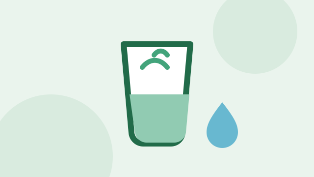
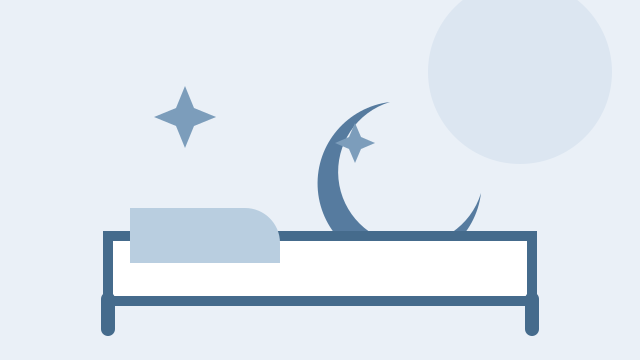
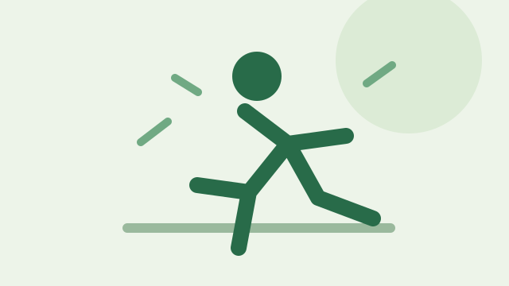
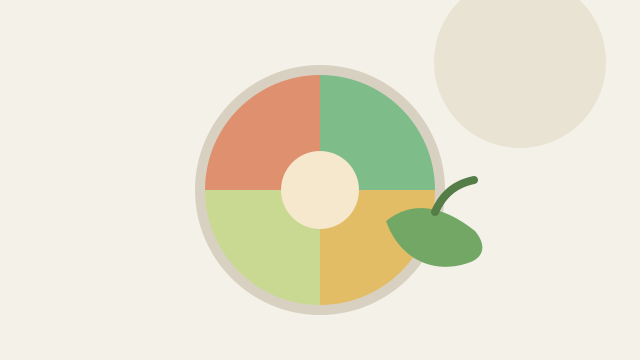
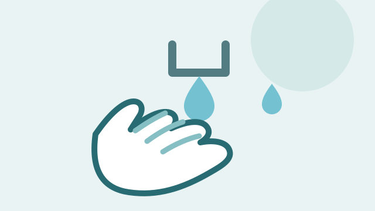
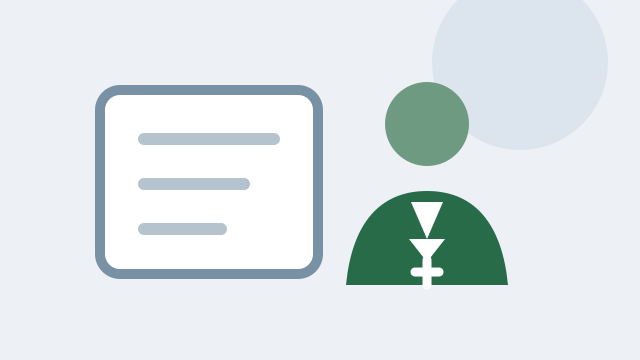

Hydratation
Buvez régulièrement et adaptez vos apports à la chaleur, à votre activité et aux conseils de votre professionnel de santé.
Lire le conseilDécouvrez nos conseils et ressources pour une meilleure prévention sanitaire

Aucun conseil ne correspond à votre recherche.

Buvez régulièrement et adaptez vos apports à la chaleur, à votre activité et aux conseils de votre professionnel de santé.
Lire le conseil
Des horaires réguliers et un environnement calme favorisent un sommeil réparateur.
Lire le conseil
Choisissez une activité adaptée à vos capacités et bougez régulièrement, à votre rythme.
Lire le conseil
Variez les aliments et privilégiez, selon les disponibilités, les fruits, les légumes et les repas équilibrés.
Lire le conseil
Lavez-vous les mains à l’eau et au savon, notamment avant de préparer ou de prendre un repas.
Lire le conseil
Un professionnel de santé peut vous conseiller sur le suivi et les examens préventifs adaptés à votre situation.
Lire le conseilConsultez nos professionnels de santé pour un suivi personnalisé et des conseils adaptés à votre situation.